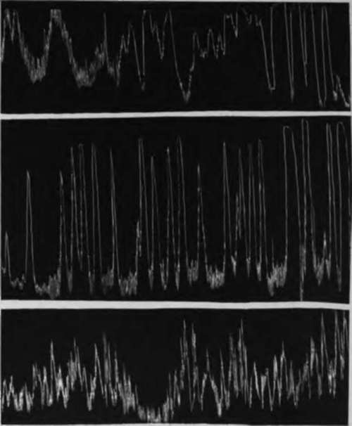
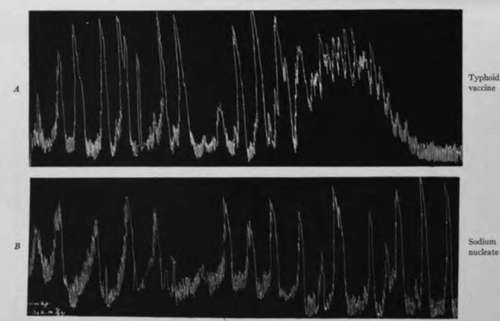

IV. Experimental Investigation Of The Hunger Mechanism In Disease Of Man. Continued
Description
This section is from the book "The Control Of Hunger In Health And Disease", by Anton Julius Carlson. Also available from Amazon: The Control of Hunger in Health and Disease.
IV. Experimental Investigation Of The Hunger Mechanism In Disease Of Man. Continued
Fig. 35--Tracing showing the vigorous contractions of the empty stomach of a man with chronic gastric ulcer. X indicates where patient felt the so-called "ulcer pains." Note the synchrony of these pains with the gastric hunger contractions. The contractions themselves are not stronger than those of the empty stomach of normal persons, but when an ulcer is present they give rise to more acute epigastric pain than characterizes the normal pangs of hunger (Ginsburg Tumpowsky, and Hamburger).
If the theory of infectious origin of ulcers indicated by the work of Rosenow is applicable in all cases, the hyperexcitability of the gastric sensory nerves in ulcer is probably due to the local inflammatory processes. Even in ulcers of traumatic origin (chemical, mechanical) secondary infection probably takes place, so that even in such cases we have local inflammation.
6. Cause Of Gastric Pain In Diseases Of The Gall Bladder
We do not refer to the pain definitely due to the mechanical stimulation of the gall bladder or the bile duct by biliary calculi, but to the epigastric pains that come on a certain length of time after a meal, and closely resemble the hunger pains of ulcer. We know that the rhythmical contractions of the gall bladder are greatly augmented during gastric digestion, probably through reflex stimulation of acid chyme in the duodenum. In this manner, pain from the gall bladder itself may be augmented parallel with gastric digestion peristalsis especially in cases of hypersecretion.
Ginsburg and Tumpowsky studied the epigastric pain in one patient with gall-bladder infection, as determined by clinical diagnosis. Gastric and duodenal ulcers were excluded. In this patient the pain ran absolutely parallel with the strong hunger contractions of the empty or nearly empty stomach. The hunger contractions were stronger than usual for a man of the patient's age. We cannot be sure that the gastric contractions were the only cause of the pains; there may be strong contractions of the gall bladder parallel with the stomach contractions.
In this patient, too, the epigastric pain appeared greater than warranted by the strength of the gastric contractions. Evidently gall-bladder infections may lead to hyperexcitability of the sensory nerve-fibers of the stomach and duodenum, possibly from the spread of bacterial toxins along the branches of the vagi nerves.
7. Hunger Contractions Of The Empty Stomach In Infants
Hunger contractions of the empty stomach in infants with pylorospasm and congenital pyloric stenosis.-Pylorospasm has been ascribed to a great variety of causes, including primary neurosis of the local motor mechanism. The hyperperistalsis of the filled stomach usually associated with spasms of the pylorus may be a temporary condition due to the presence of food in the stomach. On the other hand, if pylorospasm is simply an expression of primary hypermotility of the entire stomach, this condition of hyper-tonus and hypermotility should also be in evidence when the stomach is empty. A study of the motor conditions of the empty stomach may thus aid in determining some of the factors involved in hypercontractility of the pyloric sphincter. In infants " rumination' ' is probably always secondary to chronic vomiting, which in turn may or may not be associated with pylorospasm. If the vomiting is due to gastric hyper tonicity and hypermotility, these conditions should also be present in the empty stomach, with or without the involvement of the pylorus.
We have studied the motor conditions of the empty stomach in two infants, one with congenital pyloric stenosis, and one with pylorospasm, chronic vomiting, and rumination.
Case 1: Infant three months old; chronic vomiting and gradual loss of weight. Congenital pyloric stenosis. Gastro-enterostomy was made. The pylorus was found contracted, and somewhat edematous and anemic. Before the operation, record of the tonus and contractions of the empty stomach was made by the balloon method as applied to infants. The strength of the contractions was markedly greater than in normal infants. The duration of the periods of contraction was also greater. This indicates a greater than normal gastric tonus. There was no indication of prolonged tetanic contractions.
Case 2: Infant five months old; chronic vomiting ("rumination"). Practically stationary body weight. Pylorospasm. A number of observations were made on this infant. When the child was quiet, so that all nervous inhibitory factors were eliminated, the empty stomach usually showed hypertonus with periods of tetanic contractions lasting several minutes, interspersed with vigorous contractions of normal duration--an unmistakable condition of hypertonicity and hypermotility. If the infant was asleep during the observation period the tetanic contraction of the stomach invariably caused restless facial grimaces, or he would wake up and cry. Such vigorous and prolonged periods of tetanic contractions have so far never been observed in the empty stomach of normal infants. They have been observed in adult persons and in dogs after prolonged starvation. This type of contractions of the empty stomach may also be seen in dogs with pancreatic diabetes.
Fig. 36.-A, tracing showing a period of vigorous hunger contractions of the empty stomach of a normal infant; B, tracing showing exceptionally intense and practically continuous hunger contractions of a 3-months-old infant with persistent pylorus spasm amounting to almost complete pyloric obstruction accompanied by chronic vomiting and gradual loss of weight; C, tracing showing exceptionally intense hunger contractions and periods of incomplete tetanus of the empty stomach of a 5-months-old infant with chronic vomiting ("rumination") and practically stationary body weight. In the right half of the tracing the upward excursion of the manometer had to be checked mechanically to prevent the chloroform from being driven out. Hence the extreme vigor of the gastric contractions is not fully registered. Chloroform manometer. Time 20 minutes.
The results in the cases of these two infants indicate that pylorospasm and pyloric stenosis involve either primarily or secondarily a condition of hypertonus and hypermotility of the entire stomach. The excessive contraction of the pylorus may be an expression of this general hypermotility. It is known that the tonus and contractions of stomachs in young mammals are greater than in the adult and in the old. This may be correlated with the greater tendency to hyperactivity of the pylorus in infancy and childhood. In the adult these gastric contractions would cause intense hunger pains, and it is probable that such pains are also experienced by the infant.
8. Hunger In Experimental Frecrs In Man And Dogs
Dr. Rupp induced temporary fever in himself and in a number of other men by injections of typhoid vaccines and of sodium nucleate. Records of the gastric hunger contractions were taken in the usual way, and careful notes made of the subject's own feeling of hunger and appetite. Fever reactions on injection of the standard doses of typhoid vaccine are usually very slight and variable, but with doses two or three times larger elevation of the temperature up to 1030 or 1040 F. together with the other symptoms of fever can usually be produced for a few hours. Sodium nucleate invariably brings on a temporary fever, the degree and duration of the fever depending on the quantity injected.
Fig. 37.-A, tracing showing normal gastric hunger contractions of man during the fever#reaetion (1030 F.) following injection of 1,225 millions of killed typhoid organisms. The contractions did not give rise to hunger sensation, but were felt as a painful epigastric distress, different from hunger. Bt tracing showing normal gastric hunger contractions during a period of rise in body temperature to 1040 F., following injection of sodium nucleate (5 c.c. Lundvall's solution). The contractions gave rise to epigastric distress, not to the normal pangs of hunger (J. R. R.).
Dr. Rupp found that when the temperature elevation reached only 100°-102° F. the strength and duration of the gastric hunger contractions showed practically no deviation from the normal. But they produced a different effect on consciousness. Instead of the normal hunger pangs associated with increased appetite and desire for food, the gastric hunger periods during the fever produced headache, nausea, and an epigastric distress like 4'sick stomach." More severe temperature reactions (io4°-ios° F.) usually render the empty stomach atonic, and in that condition there are no hunger contractions. When the subjects experienced the fever chills there was always complete absence of the gastric hunger contractions.
Similar results were obtained by Dr. Mayer on dogs. Sodium nucleate fevers of 103°-105° F. lead to gastric atony and absence of the hunger contractions. But temperature elevations of one or two degrees above the normal had little or no effect.
It must be noted that we are here dealing with very temporary fever reactions. It is not unlikely that temperature elevations of one or two degrees above the normal and persisting for days or weeks would have a more deleterious influence on the gastric hunger mechanism.
These experiments show that fever anorexia is in some cases at least more complicated than the mere absence of the gastric hunger contractions. In fact we may have objectively normal gastric contractions parallel with the epigastric feeling of "sick stomach," nausea, headache, depression, no thought of or desire for food. This anomalous condition may be due to hyperexcitability of the gastric sensory nerves by action of the toxins, or due to elevation * of the temperature. Changes in the central nervous system may also play a rdle.
Continue to:
- prev: IV. Experimental Investigation Of The Hunger Mechanism In Disease Of Man
- Table of Contents
- next: Chapter XVII. Hunger And Appetite In Disease. I. Action Of Bitter Tonics Action On The Hunger Mechanism